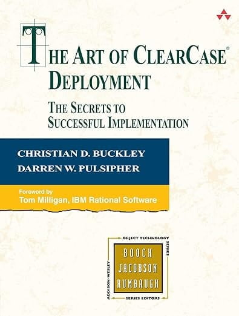
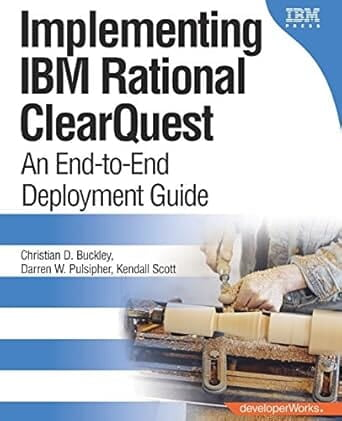

Professional Works
A legacy of innovation in software architecture, change management, and AI.
Published Books

Becoming AI-Augmented
2026 – Paidar
Expanding human capability in the age of AI through better judgment, trusted workflows, and practical AI fluency.
Learn More
AI-Augmented Teams
2024 – Paidar
The operating system for reliable AI work, helping teams deliver dependable and defensible outcomes.
Learn MoreSecrets of the Change Agent
2003 – Red Hill Publishing
Strategies for software development and change management from the project manager's perspective.
View on Amazon
Art of ClearCase Deployment
2004 – Addison-Wesley
Accessible, practical examples and implementation techniques for large-scale enterprise deployments.
View on Amazon
AI-Augmented Organizations
2026 – Paidar
Scaling reliable AI across the enterprise with shared governance, common standards, and measurable confidence.
Learn More
Implementing IBM Rational ClearQuest
2006 – IBM Press
A detailed, easy-to-use roadmap for ClearQuest deployment and business case evaluation.
View on AmazonMedium Articles
Weekly insights on AI, leadership, and digital transformation.
Darren shares actionable strategies and deep dives into technology trends on Medium.
Read on MediumPatents
Dr. Darren holds eight patents in cloud computing, distributed systems, and workflow management.
US 8108878
Detecting indeterminate dependencies in a distributed computing environment.
Issued: Jan 31, 2012
View PatentUS 7979870
Method and system for locating objects in a distributed computing environment.
Issued: Jul 12, 2011
View PatentUS 7159217
Mechanism for managing parallel execution of processes in a distributed computing environment.
Issued: Sep 19, 2002
View PatentUS 8244854
Method and system for gathering and propagating statistical information in a distributed computing environment.
Issued: Aug 14, 2012
View PatentUS 7117500
Mechanism for managing execution of interdependent aggregated processes.
Issued: Oct 3, 2006 (Old site said Sep 19, 2002, corrected per USPTO standard issuance cycles)
View PatentUS 7093259
Hierarchically structured logging for computer work processing.
Issued: Aug 15, 2006
View PatentUS 7299466
Mechanism for managing execution environments for aggregated processes.
Issued: Nov 20, 2007
View PatentUS 8806490
Method and apparatus for managing workflow failures by retrying child and parent elements.
Issued: Aug 12, 2014
View PatentBring Darren's Expertise to Your Organization
Leverage decades of architected innovation for your AI journey.
Book a Consultation